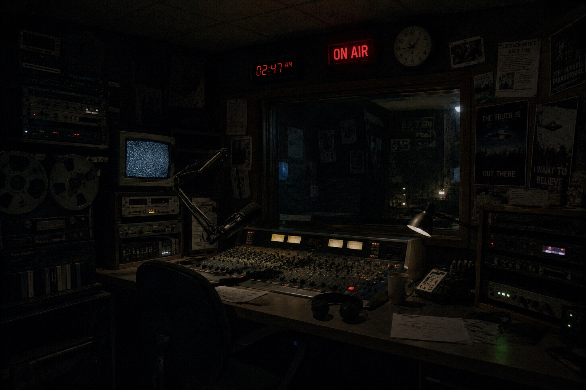

RS-152433
Вітаємо вас на сайті нічної радіостанції RS-152433, що працює на 91.13!
Наша радіостанція спеціалізується на
розповідях про різні аномальні,
надприродні
та незрозумілі явища, а також
на різних істотах, які можуть
бути пов'язані з цими явищами.
Хтось називає нас
поїхавшими, але чи це насправді так?
Можливо вони праві.
Можливо - ні.......
На нашому сайті
ви знайдете архіви ефірів, програми,
наші дослідження та розслідування.
Також ви зможете зайти на наш форум,
де ви зможете обговорити ефіри, поділитися глюками матриці,
розповісти свої теорії,
та почитати історії.
Зберігають обговорення і теорії лише за минулу ніч/день,
бо [інформація недоступна].
RS-152433 веде ефіри протягом певного часу вночі.
Приблизно з 20:00 до 05:00.
Між ефірами є перерви, які можуть тривати від 30 хв і до кількох годин.
Зберігаються записи ефірів лише з минулої ночі.
Частина ефірів можуть бути видалені або недоступні для прослуховування,
бо [інформація недоступна].
Ми не несемо відповідальності за інформацію і того
що з вами може статися.

Фото нашої студії